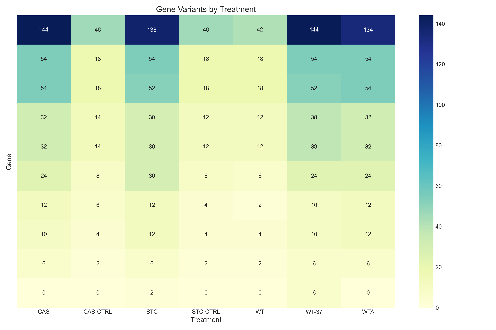
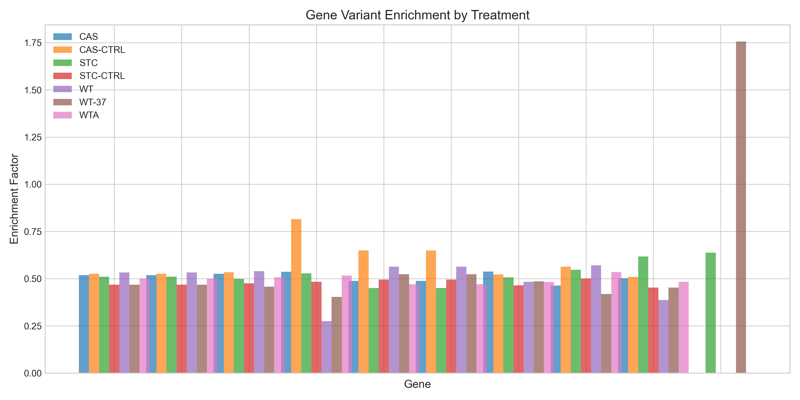
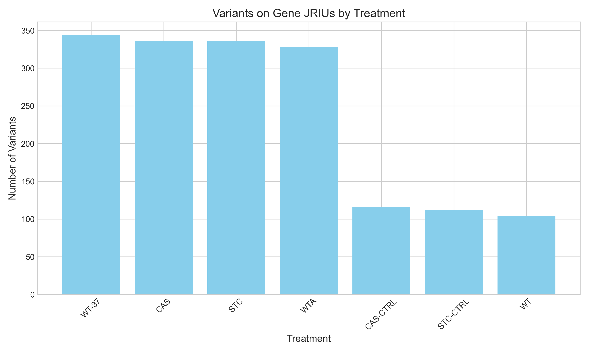
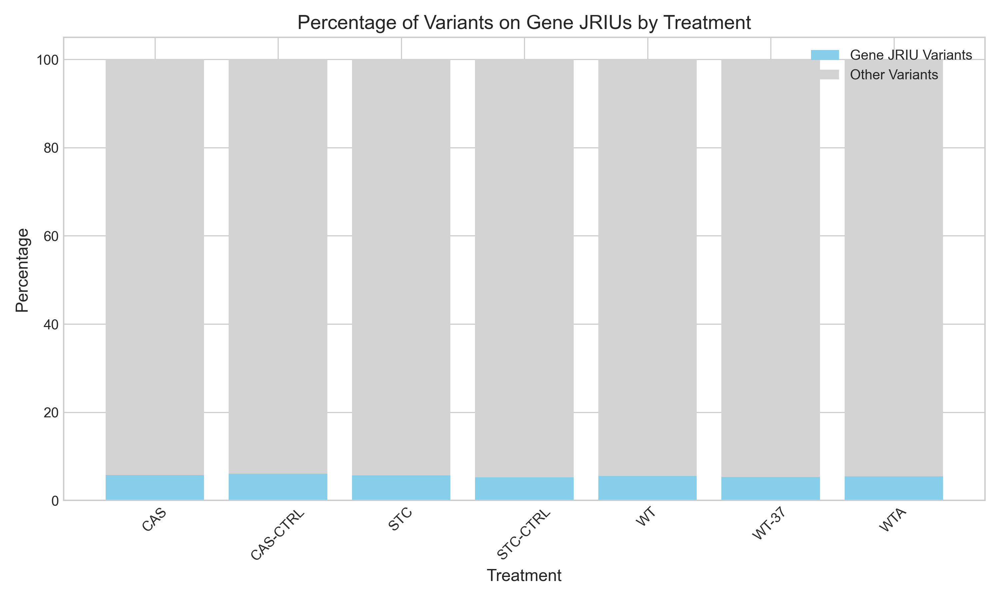

Important Note on Analysis Approach
This analysis uses a JRIU-based approach rather than position-based matching, due to coordinate system differences between the VCF variants and gene annotations. Variants are associated with genes if they occur on the same JRIU ID (genomic segment).
While this approach cannot determine the precise impact of variants on gene function, it allows for meaningful comparative analysis between treatment groups and identification of segments with high variant density.
Analysis Summary
Total Files Analyzed: 15
Total Genes of Interest: 13
Total JRIUs with Genes: 11
Total Variants Analyzed: 15078
Variants on Gene JRIUs: 838
Key Findings
- YNL280C has the highest number of associated variants (694)
- YHR190W has the highest number of associated variants (270)
- YGR175C has the highest number of associated variants (266)
- WT-37 treatment has 344 variants on gene JRIUs
- CAS treatment has 336 variants on gene JRIUs
- STC treatment has 336 variants on gene JRIUs
Data Distribution
Treatment Analysis
This section shows the distribution of variants across different treatments.
Treatment Statistics
| Treatment |
Samples |
Total Variants |
Gene JRIU Variants |
Percentage |
Avg. per Sample |
| CAS |
6 |
5816 |
336 |
5.78% |
969.33 |
| CAS-CTRL |
2 |
1912 |
116 |
6.07% |
956.00 |
| STC |
6 |
5912 |
336 |
5.68% |
985.33 |
| STC-CTRL |
2 |
2150 |
112 |
5.21% |
1075.00 |
| WT |
2 |
1888 |
104 |
5.51% |
944.00 |
| WT-37 |
6 |
6440 |
344 |
5.34% |
1073.33 |
| WTA |
6 |
6038 |
328 |
5.43% |
1006.33 |
Treatment Variant Distribution
Treatment Comparison
Gene Analysis
This section shows the distribution of variants associated with genes of interest.
Gene Statistics
| Gene ID |
SC Gene ID |
Name |
Total Variants |
Most Abundant Treatment |
| W3030O00140 |
YNL280C |
|
694 |
CAS (144 variants) |
| W3030BY00190 |
YHR190W |
|
270 |
CAS (54 variants) |
| W3030AJ00440 |
YGR175C |
|
266 |
CAS (54 variants) |
| W3030S00270 |
YML008C |
|
170 |
WT-37 (38 variants) |
| W3030S00490 |
YMR015C |
|
170 |
WT-37 (38 variants) |
| W3030E01010 |
YLR056W |
|
124 |
STC (30 variants) |
| W3030W00270 |
YGR060W |
|
58 |
CAS (12 variants) |
| W3030X00260 |
YHR190W |
|
56 |
STC (12 variants) |
| W3030EI00110 |
YHR007C |
|
30 |
CAS (6 variants) |
| W3030AD00260 |
YMR202W |
|
8 |
WT-37 (6 variants) |
Gene Variant Distribution

Gene by Treatment Heatmap

Statistical Enrichment Analysis
This section shows statistical enrichment of variants on JRIUs containing genes of interest.
Treatment Enrichment
| Treatment |
Variants on Gene JRIUs |
Expected Count |
Enrichment Factor |
P-Value |
Significant |
| CAS |
336 |
323.24 |
1.04x |
4.5685e-01 |
No |
| CAS-CTRL |
116 |
106.26 |
1.09x |
3.1833e-01 |
No |
| STC |
336 |
328.58 |
1.02x |
6.7023e-01 |
No |
| STC-CTRL |
112 |
119.49 |
0.94x |
5.0996e-01 |
No |
| WT |
104 |
104.93 |
0.99x |
1.0000e+00 |
No |
| WT-37 |
344 |
357.92 |
0.96x |
4.6282e-01 |
No |
| WTA |
328 |
335.58 |
0.98x |
6.9416e-01 |
No |
Gene Enrichment by Treatment
This table shows which genes are enriched for variants in specific treatments.
| Gene |
Treatment |
Actual Count |
Expected Count |
Enrichment |
P-Value |
Significant |
| (YMR202W) |
WT-37 |
6 |
3.42 |
1.76x |
1.3160e-01 |
No |
Enrichment Visualization

Visualization Plots
This section contains all visualization plots generated from the analysis.
Treatment Variant Counts

Gene Variant Counts
Gene Treatment Heatmap
Gene Enrichment
Treatment Percentages
